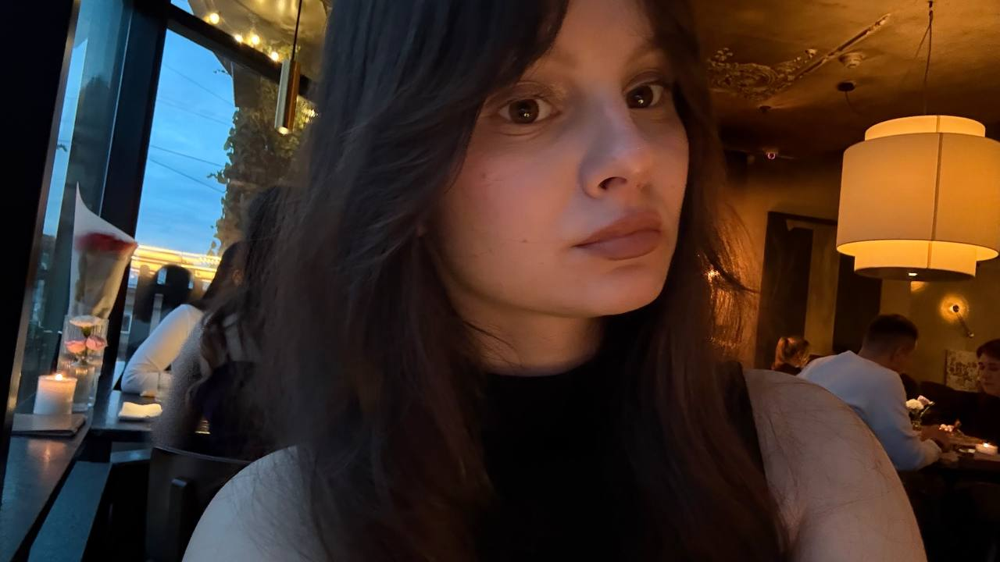
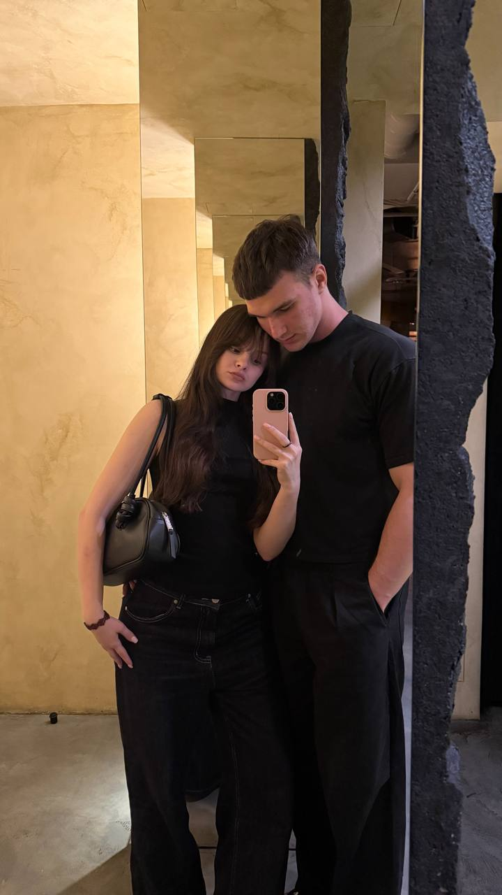
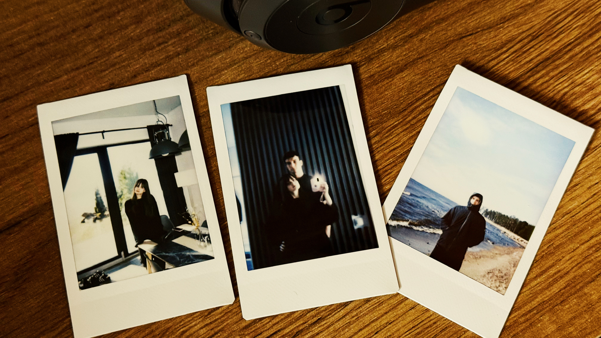
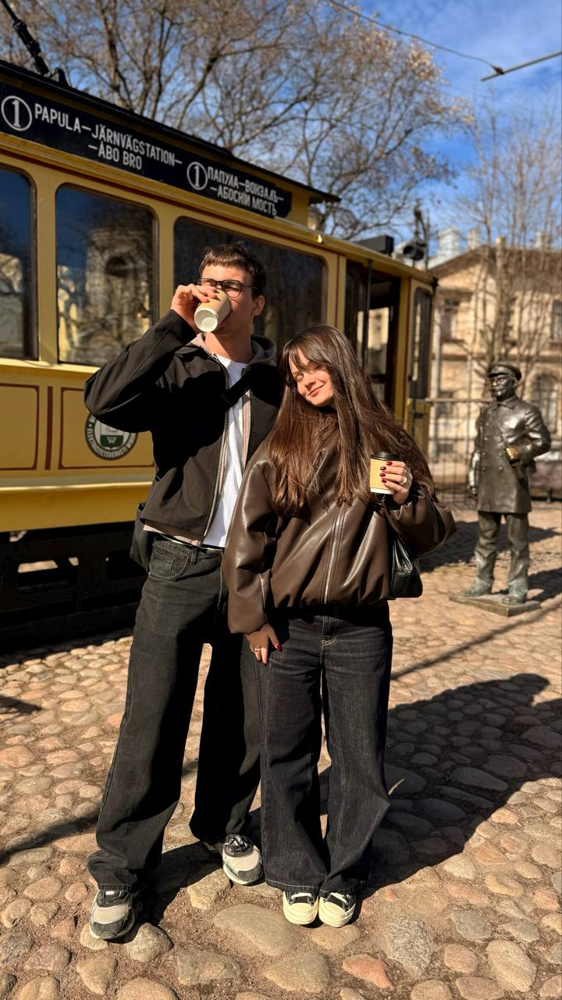
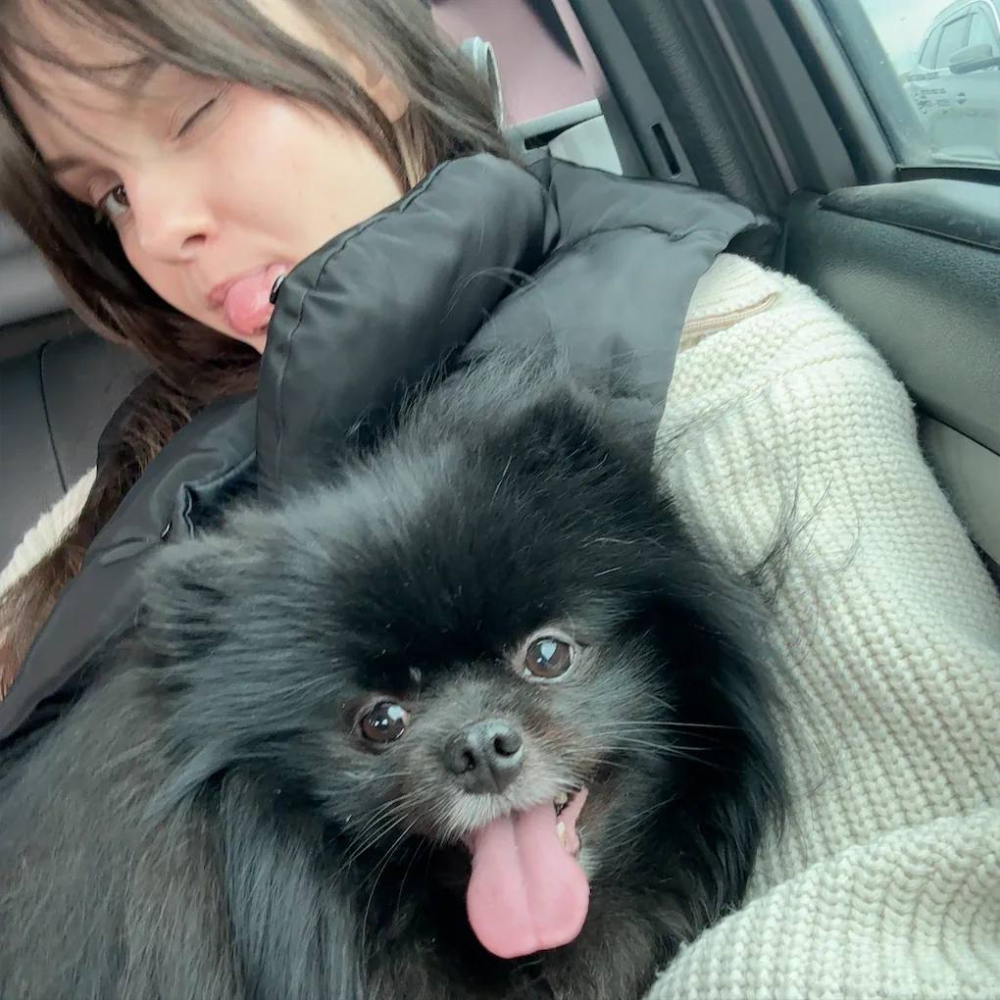

truaria • 22 годв
Студентка Политеха в Санкт-Петербурге, фотограф и человек, который любит сохранять красивые моменты жизни через объектив камеры.
Узнать большеМеня зовут Дарья. Я учусь в Санкт-Петербургском политехническом университете Петра Великого и работаю оператором ЭВМ в поликлинике. В свободное время занимаюсь фотографией, обработкой снимков и созданием коротких видеороликов. Мне нравится замечать детали, передавать настроение кадра и сохранять искренние эмоции людей.
Съёмка портретов, прогулочных фотосессий и атмосферных кадров.
Создание коротких видео и визуальных историй.
Поездки по Ленинградской области и открытие новых мест.
Люблю спокойную атмосферу, прогулки и время с близкими людьми.




Telegram: труария мысли в слух
Санкт-Петербург, Россия